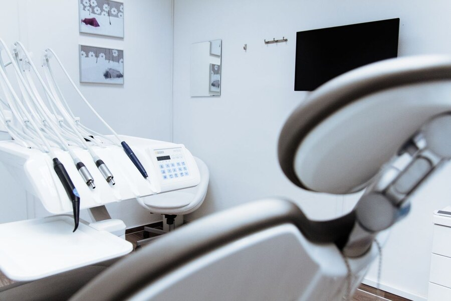

Kulani's Dentistry
About Us
Our History
Kulani's Dentistry is a medium-sized private dentistry situated in Pretoria CBD, Gauteng. It was established in 2021 and has three dentists, one receptionist and three treatment rooms. The dentistry became established through its Facebook page, returning patients, telephone bookings, walk-ins and people recommending it to others.

Our Mission
To provide affordable high-quality dental services and make sure patients feel safe and comfortable.
Our Vision
To become one of the most trusted private dentistries in Pretoria and be known for affordable high-quality services.
Who We Serve
We provide dental care for families, children, teenagers and adults.